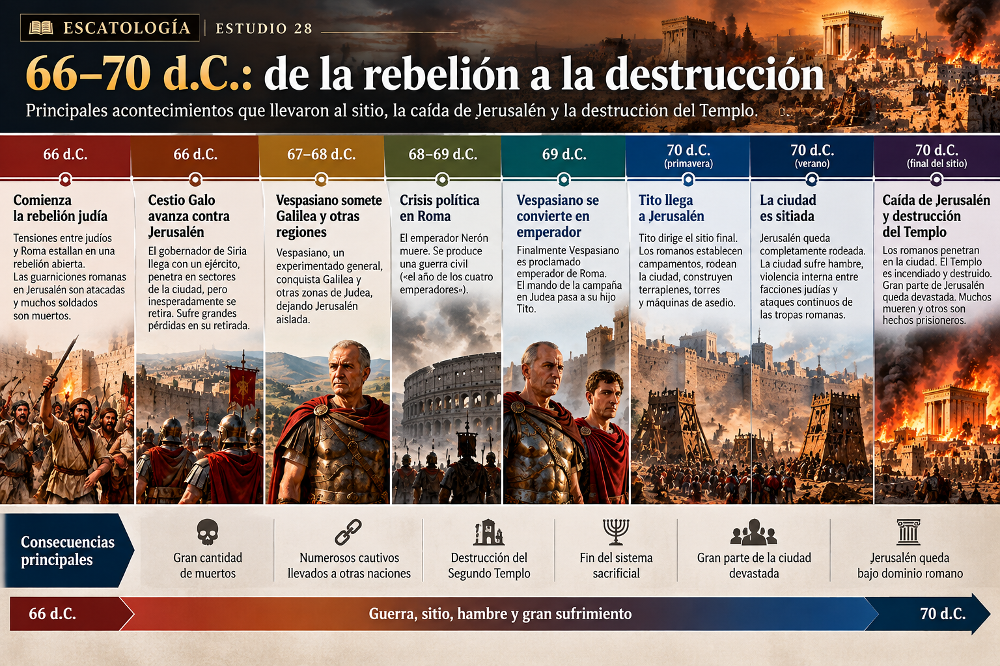
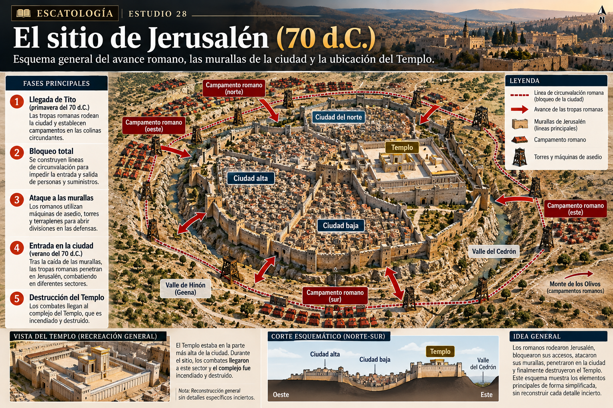
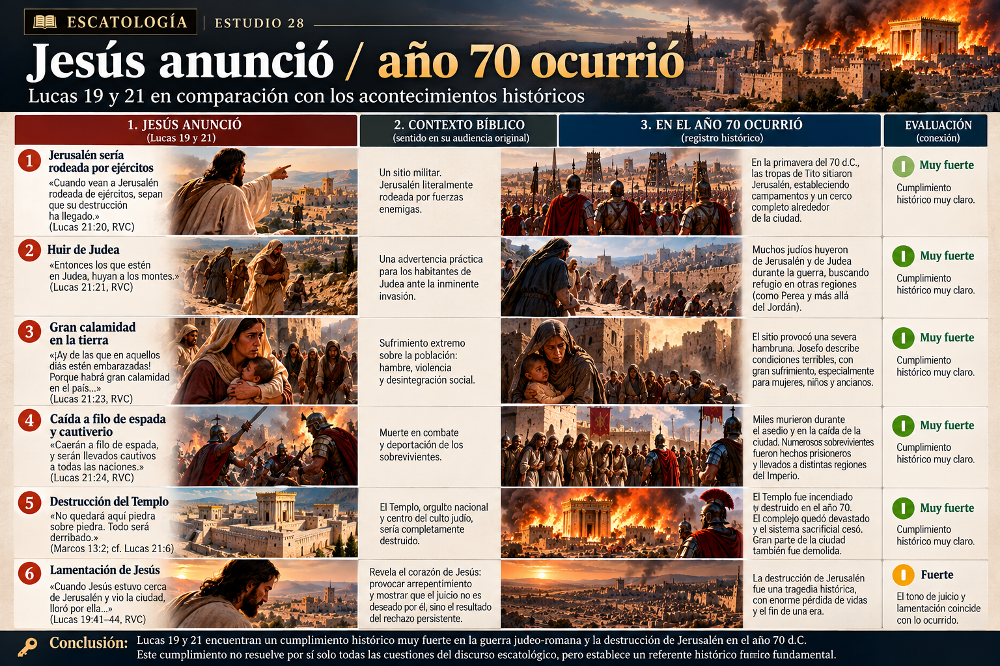
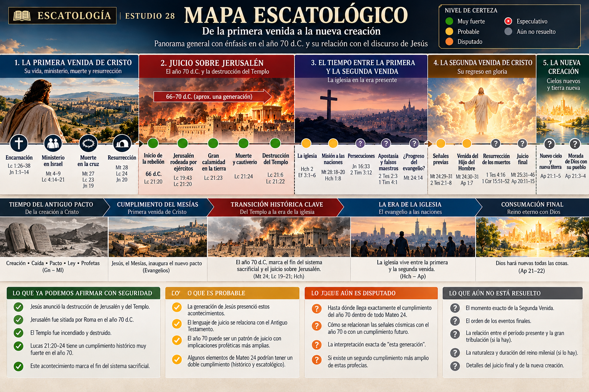

Texto base: Lucas 21:20–24
Textos relacionados: Mateo 23:37–24:2; Marcos 13:1–2; Lucas 19:41–44; 23:27–31
🎯 Objetivo: reconstruir históricamente la caída de Jerusalén y después evaluar su relación con las palabras proféticas de Jesús.
1. ¿Por qué importa tanto el año 70 d.C.? 🏛️
En los estudios anteriores vimos una afirmación sorprendentemente concreta de Jesús:
«Cuando ustedes vean a Jerusalén rodeada de ejércitos, sepan entonces que su destrucción ha llegado.»
Lucas 21:20, RVC
Y también:
«Vendrán días en que no quedará piedra sobre piedra, pues todo será derribado.»
Lucas 21:6, RVC
Antes de decidir si estas palabras hablan solamente del año 70, también del futuro, o si distintos elementos del discurso tienen distintos cumplimientos, necesitamos hacer una pregunta mucho más básica:
¿Qué ocurrió realmente en Jerusalén en el siglo I?
Pero la historia no comenzó en el año 70.
2. Judea bajo el dominio romano
En tiempos de Jesús, Judea vivía bajo el poder de Roma.
La tensión no era simplemente política. Para muchos judíos, estar sometidos a una potencia pagana planteaba preguntas profundamente religiosas:
¿Cómo podía el pueblo del Dios de Israel vivir bajo el dominio de Roma?
Dentro del judaísmo existían respuestas diferentes. No todos los judíos eran revolucionarios y tampoco existía un único movimiento de resistencia.
Pero durante las décadas posteriores a Jesús fueron creciendo las tensiones entre sectores judíos y las autoridades romanas.
Finalmente explotaron.
3. Año 66 d.C.: comienza la gran rebelión ⚔️
En el año 66 d.C. comenzó lo que normalmente llamamos la Primera Guerra Judeo-Romana.
La rebelión consiguió inicialmente importantes éxitos. Roma respondió enviando fuerzas bajo el gobernador de Siria, Cestio Galo.
Este episodio es especialmente interesante para nuestro estudio de Lucas 21. Cestio avanzó contra Jerusalén y llegó a penetrar en sectores de la ciudad. Sin embargo, inesperadamente terminó retirándose. Durante esa retirada sus tropas sufrieron fuertes pérdidas.
66 d.C. → estalla la rebelión judía
↓
66 d.C. → Cestio Galo llega contra Jerusalén y después se retira
↓
67–68 d.C. → Vespasiano somete progresivamente Galilea y otras regiones
↓
68–69 d.C. → crisis política en Roma
↓
69 d.C. → Vespasiano se convierte en emperador
↓
70 d.C. → Tito continúa la campaña y sitia Jerusalén
↓
🔥 Jerusalén y el Templo son destruidos

4. Vespasiano y Tito
Roma finalmente confió la campaña a Vespasiano, un experimentado comandante romano.
Pero entonces ocurrió algo enorme dentro del propio Imperio. Nerón murió en el año 68. Roma atravesó una guerra civil conocida como el Año de los Cuatro Emperadores.
Finalmente Vespasiano fue proclamado emperador. Por eso el mando de la campaña en Judea pasó a su hijo:
Tito.
Tito sería el comandante romano directamente asociado con la caída de Jerusalén.
5. Jerusalén estaba dividida desde dentro
Roma no atacó una ciudad políticamente unida.
Jerusalén estaba sufriendo violentas luchas internas. Josefo describe distintas facciones enfrentadas entre sí dentro de la ciudad. Entre los líderes principales aparecen Juan de Giscala y Simón bar Giora.
Mientras el ejército romano se aproximaba… los defensores de Jerusalén también combatían entre ellos.
🔥 Guerra exterior ⚔️ Guerra interna 🍞 Escasez de alimentos 🏛️ Conflictos alrededor del Templo
La ciudad estaba siendo destruida tanto desde fuera como desde dentro.
6. Tito llega a Jerusalén
En la primavera del año 70 d.C., las fuerzas de Tito llegaron a Jerusalén.
La ciudad tenía varias líneas defensivas. Roma comenzó entonces una operación militar sistemática.
- campamentos militares;
- máquinas de asedio;
- proyectiles;
- terraplenes;
- torres y arietes;
- destrucción de las defensas;
- bloqueo de la ciudad.
Las tropas romanas consiguieron atravesar progresivamente las murallas exteriores. Pero Jerusalén seguía resistiendo.
Y entonces el sitio se volvió terrible.

7. «Te rodearán por todas partes»
«Porque vendrán días sobre ti, cuando tus enemigos te rodearán con barricadas, te sitiarán y por todas partes te estrecharán.»
Lucas 19:43, RVC
«Cuando ustedes vean a Jerusalén rodeada de ejércitos…»
Lucas 21:20, RVC
Los romanos terminaron estableciendo un cerco alrededor de Jerusalén.
No necesitamos buscar aquí un simbolismo complejo.
Lucas habla de Jerusalén.
Habla de ejércitos.
Habla de un sitio.
Y eso ocurrió históricamente.
Esto no demuestra automáticamente que todo Lucas 21 se cumpliera en el año 70.
Pero sí establece un punto fundamental: Lucas 21:20–24 tiene una conexión histórica muy fuerte con la guerra judeo-romana y la caída de Jerusalén.
8. Hambre dentro de Jerusalén 🍞
El bloqueo produjo consecuencias devastadoras. La comida comenzó a escasear.
Josefo describe condiciones extremas provocadas por la hambruna y el conflicto interno.
«¡Ay de las que en aquellos días estén embarazadas o amamantando! Porque habrá una gran calamidad en el país…»
Lucas 21:23, RVC
Jesús no está describiendo una catástrofe abstracta. Está describiendo sufrimiento humano.
Madres. Niños. Familias. Una ciudad sitiada.
9. Jesús lloró por Jerusalén 😢
Lucas presenta algo que debemos recordar para interpretar correctamente estas profecías. Jesús no contempla la destrucción de Jerusalén con satisfacción. Llora.
«Cuando Jesús estuvo cerca de Jerusalén y vio la ciudad, lloró por ella.»
Lucas 19:41, RVC
Esto es teológicamente importante. El juicio anunciado por Jesús no nace de odio hacia Jerusalén. Jesús ama la ciudad y lamenta profundamente lo que viene sobre ella.
«¡Jerusalén, Jerusalén, que matas a los profetas y apedreas a los que te son enviados! ¡Cuántas veces quise juntar a tus hijos, como junta la gallina sus polluelos debajo de las alas, y no quisiste!»
Mateo 23:37, RVC
Por eso debemos evitar cualquier lectura antijudía de estos acontecimientos. Jesús mismo era judío. Sus discípulos eran judíos. La primera iglesia nació dentro de Israel. El texto presenta una tragedia y un juicio, no una licencia para despreciar al pueblo judío.
10. La caída del Templo 🔥
Finalmente los combates alcanzaron el complejo del Templo. Y ocurrió aquello que para el judaísmo del siglo I era prácticamente inimaginable.
El Templo ardió.
Josefo relata que un soldado romano arrojó fuego hacia el complejo y que las llamas terminaron extendiéndose. Según su relato, Tito no había ordenado inicialmente quemar el santuario.
El hecho de la destrucción es seguro; las intenciones exactas de Tito son más difíciles de reconstruir.
11. «No quedará piedra sobre piedra»
«Maestro, ¡mira qué piedras y qué edificios!»
Marcos 13:1, RVC
«¿Ves estos grandes edificios? Pues no quedará aquí piedra sobre piedra. Todo será derribado.»
Marcos 13:2, RVC
En el año 70, el complejo fue devastado. Después de la conquista, los romanos continuaron demoliendo extensas partes de Jerusalén.
¿Significa «no quedará piedra sobre piedra» literalmente cada piedra?
No necesariamente. El lenguaje bíblico puede expresar destrucción completa o devastadora sin exigir que absolutamente cada piedra individual desaparezca.
Además, Jesús está hablando específicamente de los magníficos edificios que los discípulos estaban contemplando.
12. ¿Qué pasó con los sobrevivientes?
«Caerán a filo de espada, y serán llevados cautivos a todas las naciones.»
Lucas 21:24, RVC
La conquista produjo numerosas muertes y cautivos.
Josefo afirma cifras gigantescas de muertos y prisioneros. Sin embargo, sus números exactos deben utilizarse con cautela; los historiadores antiguos frecuentemente transmitían cifras difíciles de verificar.
No necesitamos aceptar cada número de Josefo para reconocer la escala devastadora del acontecimiento.
13. ¿Desapareció Jerusalén completamente?
No. Esto también requiere precisión.
Josefo dice que gran parte de la ciudad fue demolida, aunque los romanos conservaron ciertas estructuras, especialmente para alojar la guarnición y como monumento de la conquista.
14. El fin de una era
La destrucción del Templo fue mucho más que perder un edificio. El Templo constituía el centro sacrificial del judaísmo.
🩸 los sacrificios 👨⚖️ el sacerdocio 🎺 las grandes fiestas 🙏 el culto del santuario 🏛️ la identidad religiosa nacional
Cuando el Templo desapareció, el sistema sacrificial dejó de funcionar. Esto transformó profundamente la historia del judaísmo.
Pero para los cristianos había además otra dimensión. El Nuevo Testamento ya había comenzado a presentar a Jesús como el cumplimiento de realidades relacionadas con el Templo, el sacrificio y la presencia de Dios.
«Destruyan este templo, y en tres días lo levantaré.»
Juan 2:19, RVC
«Pero él se refería al templo de su cuerpo.»
Juan 2:21, RVC
La esperanza cristiana ya no depende de la existencia del santuario de Jerusalén. Cristo ocupa el centro.
15. ¿Fue el año 70 un juicio de Dios?
Aquí debemos distinguir historia de interpretación teológica.
Pero los Evangelios interpretan además estos acontecimientos teológicamente.
«Porque esos serán días de retribución, para que se cumplan todas las cosas que están escritas.»
Lucas 21:22, RVC
Esto sigue un patrón profundamente veterotestamentario.
16. Jerusalén ya había sido destruida antes
En 586 a.C., Babilonia había destruido Jerusalén y el primer Templo. Los profetas interpretaron aquella catástrofe como juicio del pacto.
Siglos después, Roma destruyó el segundo Templo.
Babilonia → Jerusalén destruida → Templo destruido
y posteriormente:
Roma → Jerusalén destruida → Templo destruido
Esto ayuda a explicar por qué Jesús utiliza lenguaje procedente de los profetas. No está inventando un vocabulario apocalíptico nuevo.
Está hablando dentro del mundo bíblico de: juicio → ciudad → Templo → pacto → restauración y esperanza.
17. Entonces… ¿Lucas 21 se cumplió en el año 70?
🟢 Lucas 21:20–24 tiene como referente histórico muy fuerte la destrucción de Jerusalén del año 70 d.C.

18. Pero cuidado: esto no resuelve todo Mateo 24
Alguien podría razonar: «Si Lucas 21:20–24 ocurrió en el año 70, entonces todo Mateo 24 ocurrió en el año 70». Eso no se sigue automáticamente.
También sería apresurado decir: «Como algunos elementos parecen hablar de la Segunda Venida, entonces nada se cumplió en el año 70». Tampoco.
Nuestro método exige estudiar cada sección.
| Afirmación | Evaluación |
|---|---|
| Jesús predijo la destrucción del Templo | 🟢 Muy fuerte |
| Jerusalén fue sitiada por Roma | 🟢 Muy fuerte |
| El Templo fue destruido en 70 d.C. | 🟢 Muy fuerte |
| Lucas 21:20–24 describe naturalmente estos acontecimientos | 🟢 Muy fuerte |
| Mateo 24 contiene elementos relacionados con el año 70 | 🟢 Muy fuerte |
| Todo Mateo 24 se cumplió exclusivamente en 70 d.C. | 🟠 Disputado |
| Nada de Mateo 24 se refiere al año 70 | 🟠 Muy difícil de sostener |
| El año 70 funciona además como patrón de un juicio escatológico futuro | 🟠 Posible, pero debe demostrarse texto por texto |
| Podemos identificar cada detalle profético con un acontecimiento del 66–70 | 🔴 Especulativo |
19. ¿Qué cambia entonces en nuestra lectura de Mateo 24?
Muchísimo.
Después de reconstruir los acontecimientos históricos ya no podemos leer el discurso del Monte de los Olivos como si los discípulos hubieran preguntado únicamente: «¿Cómo será el fin del planeta?»
El discurso comienza frente a un edificio real: el Templo de Jerusalén.
Jesús anuncia su destrucción. Los discípulos preguntan cuándo ocurrirá. Y dentro de aproximadamente una generación… el Templo efectivamente fue destruido.
Eso significa que el año 70 no puede ser una nota al pie de nuestra interpretación. Debe formar parte del contexto.
Pero tampoco debemos utilizarlo como llave automática para interpretar cada versículo.
20. Tres grandes interpretaciones
Lectura principalmente preterista
Gran parte —o prácticamente todo— el discurso encuentra su cumplimiento alrededor del año 70.
Fortaleza: toma muy seriamente el contexto histórico inmediato y expresiones como «esta generación».
Dificultad: debe explicar convincentemente textos que parecen describir acontecimientos de dimensión más universal y la venida del Hijo del Hombre.
Lectura principalmente futurista
La destrucción del año 70 anticipa acontecimientos que alcanzarán su cumplimiento principal inmediatamente antes de la Segunda Venida.
Fortaleza: toma seriamente los elementos aparentemente universales y escatológicos del discurso.
Dificultad: corre el riesgo de minimizar el Templo histórico, Jerusalén y la generación directamente relacionada con Jesús.
Lectura histórico-escatológica o de doble horizonte
Parte importante del discurso describe la caída de Jerusalén, pero ese juicio puede integrarse dentro de una perspectiva que finalmente conduce hacia la venida de Cristo.
Fortaleza: permite respetar tanto el contexto histórico como la dimensión escatológica.
Dificultad: debemos demostrar desde el texto dónde ocurre una transición; no podemos inventarla simplemente porque nuestro sistema la necesita.
21. Algo extraordinario ocurrió
Imaginemos por un momento a los discípulos saliendo del Templo. Herodes había convertido aquel complejo en una de las construcciones más impresionantes de la región.
Ellos lo miran maravillados. Jesús les dice: Todo esto caerá.
Décadas después llegan las legiones romanas. Jerusalén queda rodeada. Las murallas caen. La ciudad arde. El santuario es destruido. Los sacrificios cesan.
Y el Templo que parecía representar una realidad permanente desaparece de la historia.
Pero Cristo permanece.
La esperanza cristiana no está finalmente anclada en:
🏛️ un edificio ⚔️ un imperio 🌍 una nación poderosa 📅 un esquema cronológico
Está anclada en una persona:
✝️ Jesucristo.
🧭 Mapa Escatológico — actualización del Estudio 28
Jesús anuncia la destrucción del Templo
↓
🟢 aproximadamente 30–40 años después
↓
66 d.C. — comienza la guerra judeo-romana
↓
Roma invade Judea
↓
70 d.C. — Tito sitia Jerusalén
↓
Jerusalén rodeada por ejércitos 🟢
↓
hambre + guerra + gran sufrimiento 🟢
↓
caída de Jerusalén 🟢
↓
🔥 destrucción del Segundo Templo 🟢
↓
muerte y cautiverio 🟢
↓
❓ relación exacta entre estos acontecimientos y las restantes secciones escatológicas de Mateo 24
↓
❓ Segunda Venida
↓
❓ resurrección y juicio final
↓
❓ nueva creación
No rellenamos todavía esos huecos. Los resolveremos a medida que avancemos por los textos.

📌 Conclusión
El año 70 d.C. no es una teoría escatológica. Es historia.
Roma sitió Jerusalén. Tito dirigió la campaña final. La ciudad sufrió hambre, violencia interna y guerra. El Templo fue incendiado y destruido. Muchos murieron y otros fueron hechos cautivos.
Y décadas antes, Jesús había anunciado:
Jerusalén sería rodeada.
Vendría gran angustia.
Sus habitantes caerían.
El Templo sería destruido.
Por eso la conexión entre Lucas 21:20–24 y el año 70 d.C. es 🟢 muy fuerte.
Pero nuestro estudio también establece un límite importante:
Reconocer el cumplimiento histórico del año 70 no significa que ya hayamos demostrado que todo el discurso escatológico de Jesús terminó allí.
Eso todavía debe estudiarse. Y esa distinción será fundamental para lo que viene.